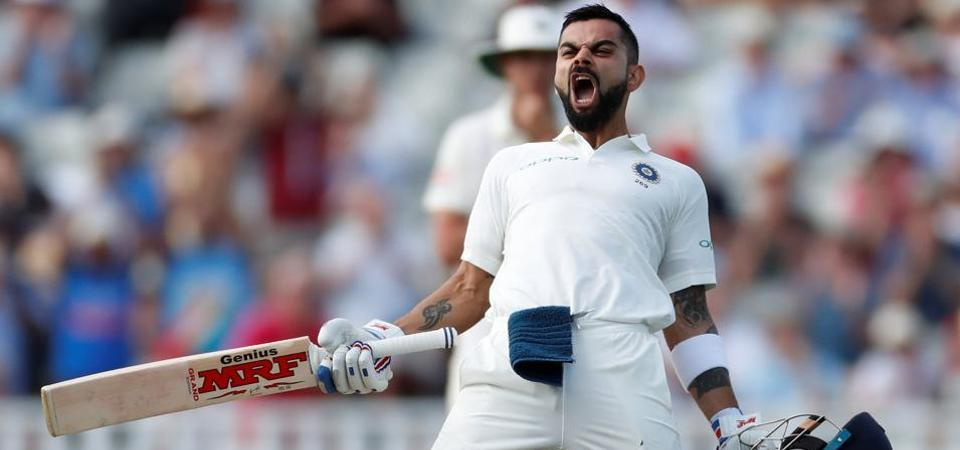

Posted in Website, Templates | Date: June 26, 2048
‘জখম’ বিরাট কোহালি থেকে সব সময় সতর্ক থাকুন!

এই টেস্ট সিরিজ শুরু হওয়ার আগে কত কী শুনেছিলাম। জিমি অ্যান্ডারসন এ বারও না সমস্যায় ফেলে দেন কোহালিকে। ইংল্যান্ডে রান না পেলে সে আর কী ব্যাটসম্যান! কোহালিও নিশ্চয়ই এ সব কথা শুনেছিলেন। যন্ত্রণা পেয়েছিলেন আর মনে মনে গর্জে ছিলেন। বৃহস্পতিবার এজবাস্টনে ইংল্যান্ডের বোলাররা টের পেলেন, কোহালিকে (১৪৯) তাতিয়ে দিলে ফল কী হতে পারে।
ভারতীয় ব্যাটিংয়ের ধ্বংসস্তূপের মধ্যে দাঁড়িয়ে একা লড়াই চালিয়ে গেলেন কোহালি। যেখানে একটা সময় মনে হচ্ছিল, জো রুটরা বড় ব্যবধানে এগিয়ে যাবেন, সেখানে ইংল্যান্ডের ২৮৭ রানের খুব কাছে দলকে নিয়ে গেলেন ভারত অধিনায়ক।
চার বছর আগে যে কোহালি ইংল্যান্ডে এসেছিলেন আর এই কোহালির মধ্যে তফাত কোথায়?
তফাত অনেক। এ বার কোহালি পুরোপুরি প্রস্তুত হয়ে এসেছেন। হোমওয়ার্ক করেছেন কী ভাবে ইংল্যান্ড বোলারদের সামলাবেন। মনঃসংযোগে এতটুকু চিড় ধরতে দেননি। একটা পরিসংখ্যান দেখছিলাম। সেঞ্চুরির আগে কোহালি চল্লিশটা বল ছেড়েছেন, যার মধ্যে অ্যান্ডারসনেরই ২৬টা। অর্থাৎ বলা যায়, অ্যান্ডারসনের চার ওভার বল ব্যাটেই লাগাননি কোহালি। ওঁর মতো একজন স্ট্রোকপ্লেয়ারের কাছ থেকে এতটা সংযমী ইনিংস, ভাবাই যায় না।
চার বছর আগে কোহালি একটা ভুল করতেন। যেটা এ বার দেখা গেল না। অফস্টাম্পের ওপর থেকে বেরিয়ে যাওয়া বলে ব্যাটটা বাড়িয়ে দিতেন। এ বার ডান পা একটু অ্যাক্রস এনে অফস্টাম্প পুরো কভার করে বল ছাড়ছিলেন। ঝুঁকি শব্দটা ছেঁটে ফেলেছিলেন। পুরোপুরি মুম্বই ঘরানার ব্যাটিং— ‘আমি লোটাকম্বল নিয়ে উইকেটে যাচ্ছি। পারলে আমাকে আউট করো।’ মনঃসংযোগের ধরনটাও সুনীল গাওস্করের মতো। শরীরের এত কাছ থেকে এ ভাবেই বল ছাড়তেন সানি।
সকালে যখন ইংল্যান্ড ২৮৭ রানে শেষ হয়ে গেল আর ভারত স্কোরবোর্ডে ৫০ রান তুলে ফেলল কোনও উইকেট না হারিয়ে, মনে হচ্ছিল দিনটা আমাদেরই হবে। কিন্তু বছর কুড়ির একটা ছেলের স্পেলে প্রথম ধাক্কাটা খায় ভারত। মাত্র দু’ওভারের মধ্যে ভারতের প্রথম তিন ব্যাটসম্যানকে ফিরিয়ে দেন স্যাম কারেন (৪-৭৪)। এই স্যাম জিম্বাবোয়ের প্রয়াত অলরাউন্ডার কেভিন কারেনের ছেলে। স্যামের দাদা টম আবার আইপিএলে কেকেআরের হয়েও খেলে গিয়েছেন।
লাঞ্চের পরে আবার ধাক্কা। এ বার বোলার বেন স্টোকস। স্টোকসের শিকার অজিঙ্ক রাহানে এবং দীনেশ কার্তিক। ওই সময় ভারতের স্কোর ১০০ রানে পাঁচ উইকেট। একটু পরে সেটা গিয়ে দাঁড়াল ১৮২-৮।
সেখান থেকে বাইশতম টেস্ট সেঞ্চুরি, ভারতকে ২৭৮ রানে পৌঁছে দেওয়া। একটা সময় মনে হচ্ছিল, হয়তো প্রথম ইনিংসে একশো রানের কাছাকাছি এগিয়ে যাবে ইংল্যান্ড। কিন্তু রুটদের ‘লিড’ দাঁড়াল মাত্র ১৩। কোহালির এই সেঞ্চুরি ভারতকে প্রথম টেস্টে রীতিমতো লড়াইয়ে রেখে দিল।
Back